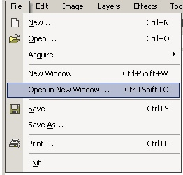
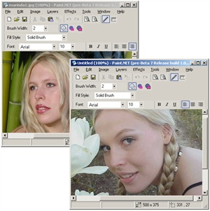

Open in New Window
|
 The Open in New Window Operation (File-->Open in New Window) prompts you for an image to load and then starts a new instance of Paint.NET with that image. The Open in New Window Operation is very similar to the New Window Operation, except for the fact that in the latter, you are not prompted for an image to load. |
|
 This is an example of doing a Open in New Window Operation while another image is currently being edited. This shows how useful the operation is. For example, the user doesn't have to complete editing, and close the current image before they start working on another image. Rather, separate images can be worked upon concurrently. |